Europe Trip 2007
2007

In 2007 we stayed a month in Zlín, Czech Republic, and traveled through eastern Europe.
These photos include Prague — Charles Bridge, the Astronomical Clock, St. Vitus — and Kutná Hora with the Sedlec Ossuary.


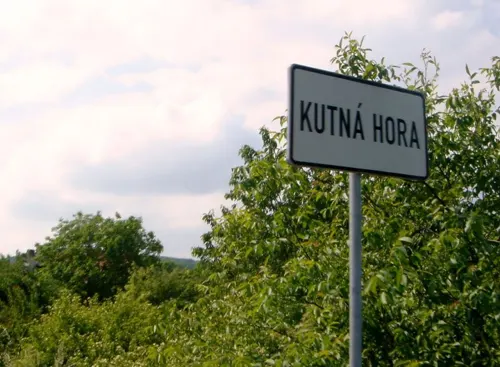

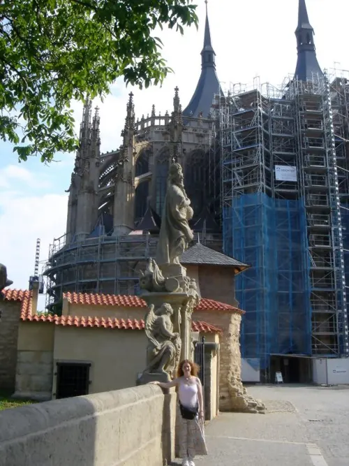

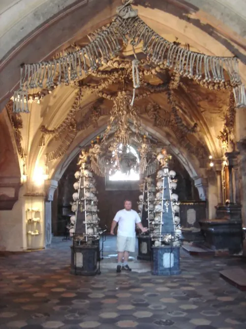

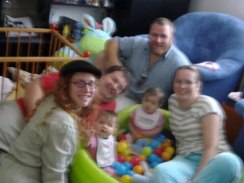

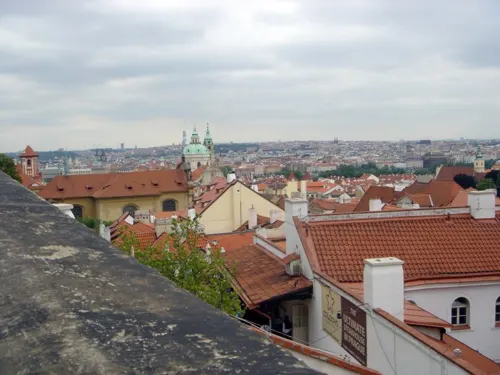

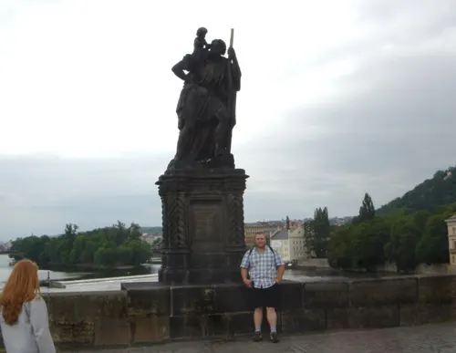

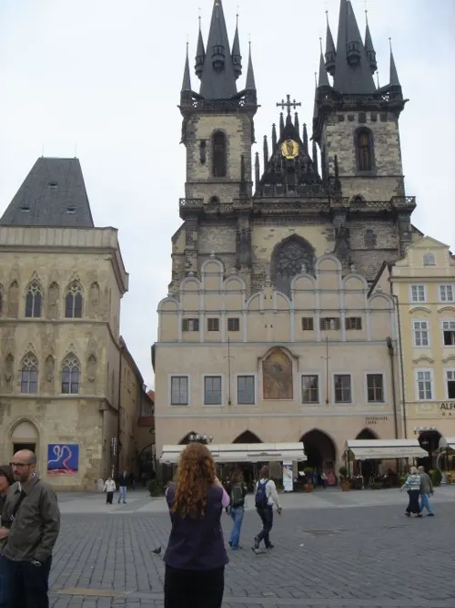

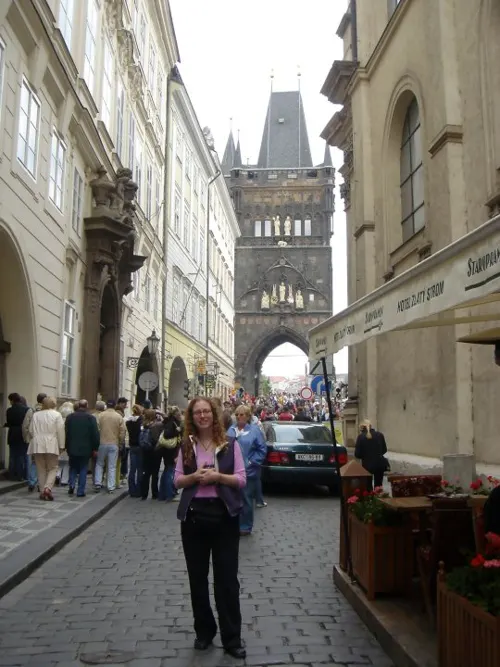

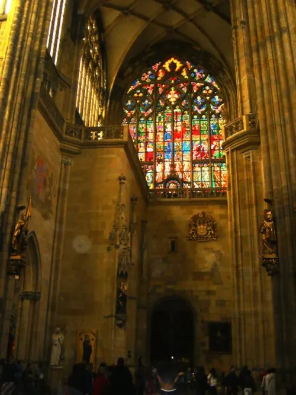

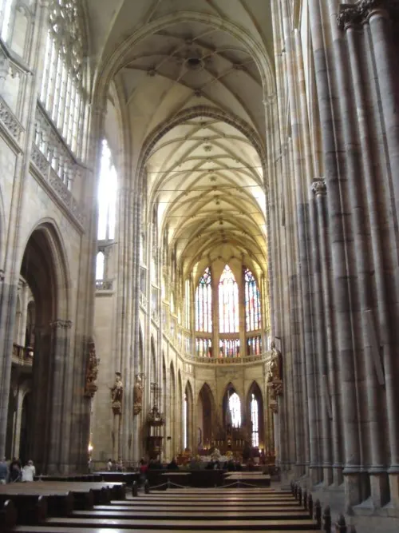

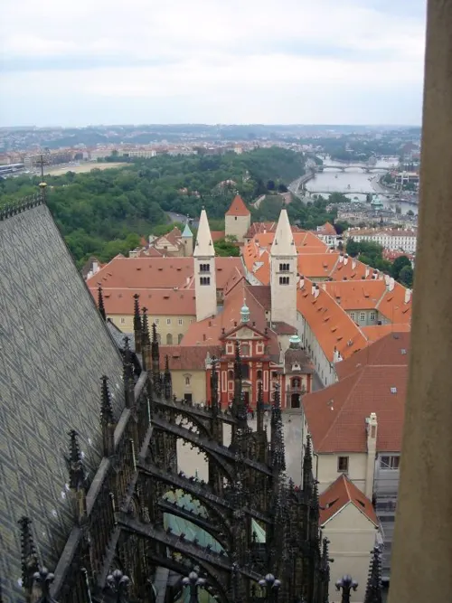

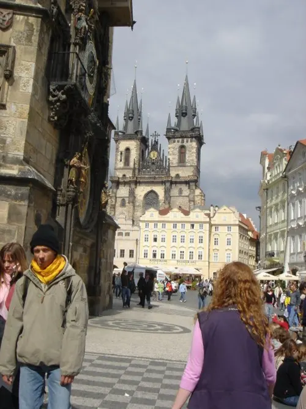